Tomado del siguiente Manual GIT en https://git-scm.com/book/es/v2:
Un control de versiones es un sistema que registra los cambios realizados en un archivo o conjunto de archivos a lo largo del tiempo, de modo que puedas recuperar versiones específicas más adelante.
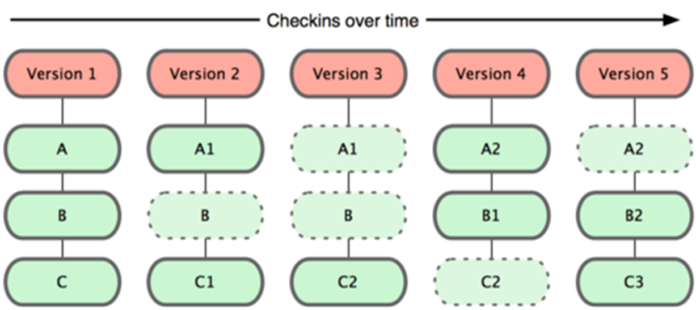
Instalación de git:
sudo apt-get update
sudo apt-get install git
Configuración necesaria para cada commit que haga:
git config --global user.name "Your Name"
git config --global user.email "youremail@domain.com"
Opcionalmente el editor (si no me gusta el que hay por defecto):
git config --global core.editor vi
Todo lo aquí contado puede verse con más detalle en el citado manual.
Git tiene 3 niveles de configuración, cada nivel sobreescribe el anterior:
Para todos los usuarios: /etc/gitconfig
Para un usuario: ~/.gitconfig (opción --global)
Para un repositorio: .git/config
git config --list
ssh-keygen
~/.ssh/id\_rsa.pub a una nueva clave ssh en GitHubEn tal caso basta con hacer:
git clone <url repo> #habitual
git clone <url repo> <carpeta> #permite definir destino
Todas estas operaciones son locales:
git status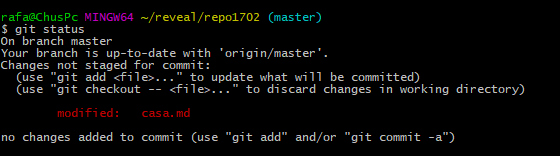
git add ... pasamos los ficheros modificados/nuevos a preparados.git add .
git commit -m "comentario explicativo"
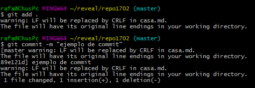
git addgit add <nombre fichero> #un sólo fichero
git add img/logo.jpg
git add <nombre directorio> #todo lo de un directorio
git add . #caso particular, todo, todo...
git add public/js
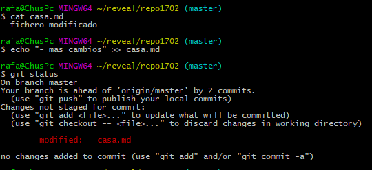 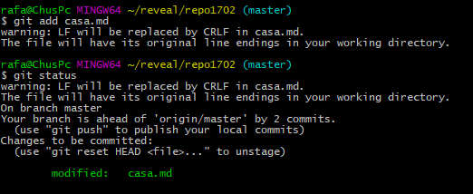
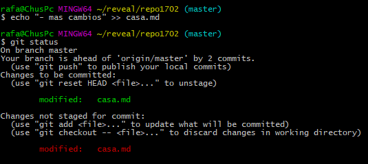 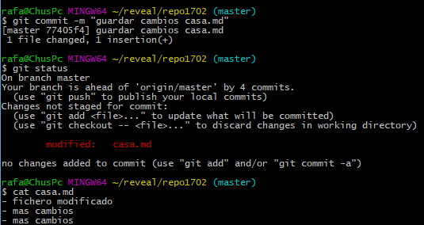
git checkout <nombrefichero>
git checkout casa.md
git checkout <nombre directorio>
git checkout .
git add:git reset HEAD <nombrefichero>
git reset HEAD casa.md
git reset HEAD <nombre directorio>
git reset HEAD .
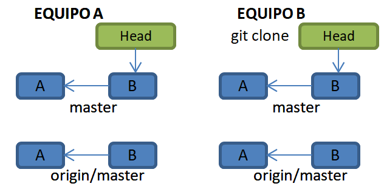
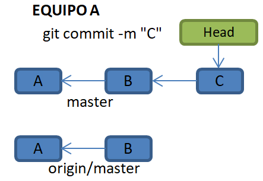
git push # sube rama "preferida"
# comando usado en la subida inicial tras git init. Lo explicaremos
git push -u origin master
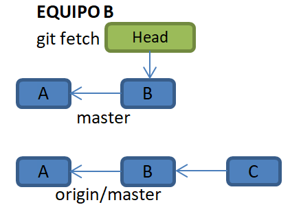 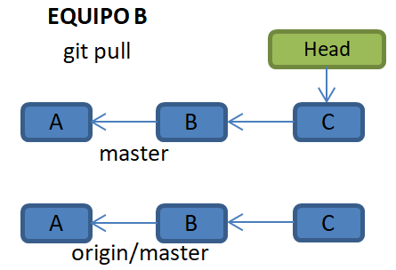
git fetch
git status
git pull
git commit
git status
git push
mastermastergit branch // lista de ramas
git branch <rama> // crear rama
git checkout <rama> // cambiar de rama
git checkout -b <rama> // crear y cambiar rama 2 en 1
git branch -d <rama> // borrar rama
git checkout master // nos ponemos en rama master
git merge <rama> //fundimos con la rama deseada
git push # sube rama "preferida"
git push <repo remoto> <rama> # sube una rama concreta
git push origin dev # Ej. sube rama dev
git push -u <repo remoto> <rama># sube y predetermina rama
git push -u origin master # Ej. sube y pred. master
git push origin <rama>
git fetch #crea la rama oculta origin/<rama>
git checkout -b <rama> origin/<rama>
git checkout --track origin/<rama>
git log nos muestra información históricagit diff compara el contenido de los ficherosgit log #uso base
git log -<n> #log de los últimos n commits
git log --oneline -5 #lista de commits breve
git log --follow [file] #lista de commit con cambios para "file"
git show <commit> # información completa de un commit concreto
git diff # diferencia entre estado actual y el preparado o comprometido
git diff --cached #diferencia entre el preparado y el último commit
git diff --stat #idem al primero pero con información resumida de cambios
git diff <commit> # cambios desde un commit hasta la actualidad
git diff <commit> <file># idem fichero concreto
git diff master~2 README.md #Cambios en los dos últimos commit de master
git diff HEAD~2 README.md #Cambios en los dos últimos commit HEAD
git diff cd598e4 README.md #Cambios desde un commit concreto por hash
git diff <commit>:<file> <commit2>:<file> #diff de un fichero entre dos commits
git diff cd598e4:README.md 31422ac:README.md
git diff master~20:README.md master~1:README.md
.gitignore en el directorio raizpendiente